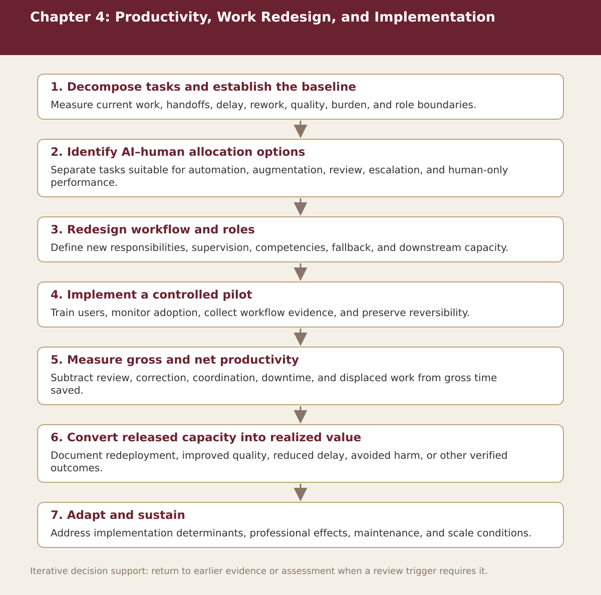

Chapter 4
Productivity, Work Redesign, and Implementation
Chapter-level process map linking the chapter’s decision questions to the companion resources and decision gates.

Process steps
| Step | Stage | Purpose | Required Input | Expected Output | Decision Or Gate |
|---|---|---|---|---|---|
| 1 | Decompose tasks and establish the baseline | Measure current work, handoffs, delay, rework, quality, burden, and role boundaries. | Local evidence and the prior approved step | Versioned record for: Decompose tasks and establish the baseline | Proceed, revise, escalate, restrict, or stop as appropriate |
| 2 | Identify AI–human allocation options | Separate tasks suitable for automation, augmentation, review, escalation, and human-only performance. | Local evidence and the prior approved step | Versioned record for: Identify AI–human allocation options | Proceed, revise, escalate, restrict, or stop as appropriate |
| 3 | Redesign workflow and roles | Define new responsibilities, supervision, competencies, fallback, and downstream capacity. | Local evidence and the prior approved step | Versioned record for: Redesign workflow and roles | Proceed, revise, escalate, restrict, or stop as appropriate |
| 4 | Implement a controlled pilot | Train users, monitor adoption, collect workflow evidence, and preserve reversibility. | Local evidence and the prior approved step | Versioned record for: Implement a controlled pilot | Proceed, revise, escalate, restrict, or stop as appropriate |
| 5 | Measure gross and net productivity | Subtract review, correction, coordination, downtime, and displaced work from gross time saved. | Local evidence and the prior approved step | Versioned record for: Measure gross and net productivity | Proceed, revise, escalate, restrict, or stop as appropriate |
| 6 | Convert released capacity into realized value | Document redeployment, improved quality, reduced delay, avoided harm, or other verified outcomes. | Local evidence and the prior approved step | Versioned record for: Convert released capacity into realized value | Proceed, revise, escalate, restrict, or stop as appropriate |
| 7 | Adapt and sustain | Address implementation determinants, professional effects, maintenance, and scale conditions. | Local evidence and the prior approved step | Versioned record for: Adapt and sustain | Proceed, revise, escalate, restrict, or stop as appropriate |